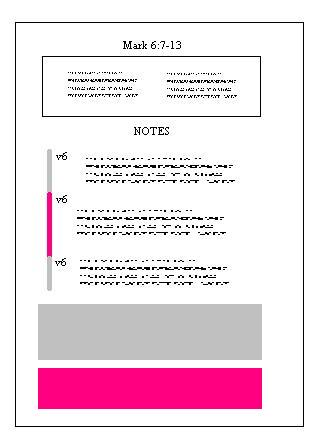

This site is hosting a full copy with some UI redesign of a site Mickael Turton maintained for two decades.
All rights reserved to Mickael Turton.
All rights reserved to Mickael Turton.
Index
This website contains a complete verse-by-verse commentary on the
Gospel of Mark, focusing on the historicity of people, places, events,
and sayings in the world of the Gospel of Mark. Where pertinent,
useful, or just plain interesting, additional information is given.
Good luck! If you have questions or comments, feel free to contact me. If you're interested in whys and wherefores, see A Note from the Author below. Everything on this website is copyright by me, but feel free to use if proper attribution is made.
Recently this commentary was thoroughly reviewed by my good friend Jacob Aliet, who did a great job. That review is on the website: Jacob Aliet's review.
Michael

Each chapter is structured in the following manner:
- the verses under discussion (from the Revised
Standard
Version, RSV), found at the head of each
pericope (table in two columns
at the beginning);
- notes on the individual verses that contain
remarks
relevant to historicity (pink/gray border);
- a reflection on
the historicity of events in the form of a
historical commentary after
each pericope (gray area);
- and, at the end, an excursus, or article, on a topic of interest for that chapter or the Gospel of Mark, that is meant to argue, inform, or stimulate (pink area).
Good luck! If you have questions or comments, feel free to contact me. If you're interested in whys and wherefores, see A Note from the Author below. Everything on this website is copyright by me, but feel free to use if proper attribution is made.
Recently this commentary was thoroughly reviewed by my good friend Jacob Aliet, who did a great job. That review is on the website: Jacob Aliet's review.
Michael
| Jesus said, "If you bring forth what is within you, what you have will save you. If you do not have that within you, what you do not have within you [will] kill you." -- Gospel of Thomas |
There's something about the Gospel of Mark. Matthew instructs, Luke pleases, John drones, but Mark? Mark obsesses. People dive into Mark and emerge for air, months later, not certain what happened to them, and wondering who strangers living in their house are. You know you've been reading Mark too long when you look at the description of the Gerasene Demoniac in chains, and wonder if it might not be a sly parody of Paul in chains in Ephesus.......
The genesis of this website was a conversation between Peter Kirby and I about a list of books he had compiled for study of the Gospels. They were all largely conservative commentaries, and I complained to him that there were no commentaries from skeptical scholars. Hardly had I sent the email before I realized that the reason he had not included any commentaries by skeptical scholars is that there are none. Apparently only believing scholars, largely conservatives, are motivated to write commentaries. Skeptical scholars tend to produce studies that take in the New Testament and related writings in the entire, but no skeptical scholar has produced a verse-by-verse study of a particular gospel. The closest thing is Gerd Ludemann's Jesus After 2000 Years, but that work, in my view, suffers from serious flaws in methodology that undermine its historical reading, although it is an immense treasure trove of valuable and useful information. This website is the first step toward the goal of producing a skeptical commentary on the Gospel of Mark.
The methodological criteria underlying this commentary are discussed elsewhere, so I will focus on format and presentation here. I have elected to refer to the writer of Mark as, well, "the writer of Mark" or "the author of Mark" throughout. I realize that this usage is longer and sometimes awkward, but there are two strong reasons for adopting that usage. First, the name "Mark" suggests certain personal qualities to me. I did not want to impute those qualities to a writer from two thousand years past about whom nothing is known, not even the gender (I have bowed to tradition by referring to the writer as "he"). Second, by using the name "Mark" one engages in subtle historical apologetics, since the conservative position is that the writer of the Gospel of Mark was indeed an early Christian who knew Peter named John Mark. For these reasons, I felt that identifying the writer as "Mark" introduced subtle biases into my thinking.
Another usage I have usually adopted is the term "creation off of the OT" or something similar, to replace the more commonly-used term "midrash." The latter term is a bit alien, especially to those who are new to the scholarly discourses, and already has another technical meaning. Although the phrase I chose is longer, it is also clearer, I think.
The color scheme and format proved to be the most vexing part of the website. I have no artistic talent; stick figures go out on strike when they are forced to appear in my drawings. I hope the reader finds the color scheme I finally settled on to be congenial. I apologize for the fact that the website is so text-heavy, but I decided not to include any of the usual pictures of Roman era coins or Jewish ruins, on the grounds that they lend a spurious historical weight to the reading. I am indebted to Jacob Aliet and Clyde Warden for their helpful comments on this front.
The hardest part of building such a website is deciding what not to put in. The vast majority of output on Mark consists of theological interpretation that is of limited use in making historical judgments, but nearly all of which is fascinating on some level or to some potential reader. Every new book and article seemed to present agonizing choices. Thus, while most items in the notes relate somehow to historicity, some I included merely because I thought they were interesting.
Who has impacted my thinking on Mark the most? Mary Ann Tolbert, Vernon Robbins, Ted Weeden, Robert Price, Thomas Brodie, Earl Doherty..... Naturally, with the exception of Tolbert's Sowing the Gospel, the major works on Mark by these thinkers are not available in Taiwan where I live. But there is hardly anything I've read that hasn't been useful, from books that argue that Christianity is a Roman invention to destroy Judaism, to books that argue that the writer of Mark was an uncreative clod, little more than a stenographer of Peter, and every word in Mark is true.
After many months of interacting with the Gospel of Mark, all I can say is that its writer was one of the great literary geniuses of history. He makes nothing plain and demands that the reader do the hard work of going back to the documents he has sourced to refract what he has written through what the reader discovers in his sources. He invites broad interpretation, and eludes easy pigeon-holing. He has a tricksy sense of humor that laughs at the reader, loves irony and can't get enough of it. His work is carefully composed and structured, yet elucidating the structures is often difficult. He toys with you: the writer of Mark is the masked lady who invites you to follow her out of Carnival in Venice down back alleys to a secret rendezvous, only to deliver you into the hands of kidnappers...
I'd like to dedicate this website to everyone who helped along the way, in motivating me, shaping my thinking, sending me references, and slapping me down:
| Peter, Jacob; Toto; spin, CX, Amaleq, Richard C, Earl Doherty who pointed the way, the Internet Infidels, the JMers, XTALKers, and last, the Christian apologists I have known. |
The ideas in my commentary have many fathers, but the failures are my own beloved sons. May they, like my own flesh, teach me something new each day.
For those who have read the secret sayings: this commentary is my wall.
Michael Turton
Tanzi, Taiwan
Dec 31, 2004